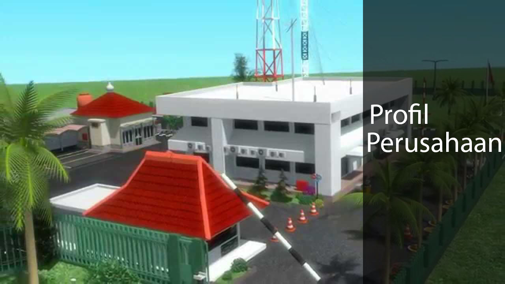

Profil
PROFIL PERUSAHAAN
Profil perusahaan
Visi
Diakui sebagai Perusahaan Kelas Dunia yang Bertumbuh kembang, Unggul dan terpercaya dengan bertumpu pada Potensi Insani.
Misi
- Menjalankan bisnis kelistrikan dan bidang lain yang terkait, berorientasi pada kepuasan pelanggan,anggota perusahaan
- Menjadikan tenaga listrik sebagai media untuk meningkatkan kualitas kehidupan masyarakat.
- Mengupayakan agar tenaga listrik menjadi pendorong kegiatan ekonomi.
- Menjalankan kegiatan usaha yang berwawasan lingkungan.
Motto
Listrik untuk Kehidupan yang Lebih Baik
Maksud dan Tujuan Perseroan
Untuk menyelenggarakan usaha penyediaan tenaga listrik bagi kepentingan umum dalam jumlah dan mutu yang memadai serta memupuk keuntungan dan melaksanakan penugasan Pemerintah di bidang ketenagalistrikan dalam rangka menunjang pembangunan dengan menerapkan prinsip-prinsip Perseroan Terbatas.
Riwayat Singkat PLN
Berawal di akhir abad 19, bidang pabrik gula dan pabrik ketenagalistrikan di Indonesia mulai ditingkatkan saat beberapa perusahaan asal Belanda yang bergerak di bidang pabrik gula dan pebrik teh mendirikan pembangkit tenaga lisrik untuk keperluan sendiri.
Antara tahun 1942-1945 terjadi peralihan pengelolaan perusahaan-perusahaan Belanda tersebut oleh Jepang, setelah Belanda menyerah kepada pasukan tentara Jepang di awal Perang Dunia II.
Proses peralihan kekuasaan kembali terjadi di akhir Perang Dunia II pada Agustus 1945, saat Jepang menyerah kepada Sekutu. Kesempatan ini dimanfaatkan oleh para pemuda dan buruh listrik melalui delagasi Buruh/Pegawai Listrik dan Gas yang bersama-sama dengan Pemimpin KNI Pusat berinisiatif menghadap Presiden Soekarno untuk menyerahkan perusahaan-perusahaan tersebut kepada Pemerintah Republik Indinesia. Pada 27 Oktober 1945, Presiden Soekarno membentuk Jawatan Listrik dan Gas di bawah Departemen Pekerjaan Umum dan Tenaga dengan kapasitas pembangkit tenaga listrik sebesar 157,5 MW.
Pada tanggal 1 januari 1961, Jawatan Listrik dan Gas diubah menjadi BPU-PLN (Bada Pemimpin Umum Perusahaan Listrik Negara) yang bergerak di bidang listrik, gas dan kokas yang dibubarkan pada tanggal 1 Januari 1965. Pada saat yang sama, 2 (dua) perusahaan negara yaitu Perusahaan Listrik Negara (PLN) sebagai pengelola tenaga listrik milik negara dan Perusahaan Gas Negara (PGN) sebagai pengelola gas diresmikan.
Pada tahun 1972, sesuai dengan Peraturan Pemerintah No. 17, status Perusahaan Listrik Negara (PLN) ditetapkan sebagai Perusahaan Umum Listrik Negara dan sebagai Pemegang Kuasa Usaha Ketenagalistrikan (PKUK) dengan tugas menyediakan tenaga listrik bagi kepentingan umum.
Seiring dengan kebijakan Pemerintah yang memberikan kesempatan kepada sektor swasta untuk bergerak dalam bisnis penyediaan listrik, maka sejak tahun 1994 status PLN beralih dari Perusahaan Umum menjadi Perusahaan Perseroan (Persero) dan juga sebagai PKUK dalam menyediakan listrik bagi kepentingan umum hingga sekarang.
Copyright©2020 PT. PLN (Persero) UPB Sumbagsel